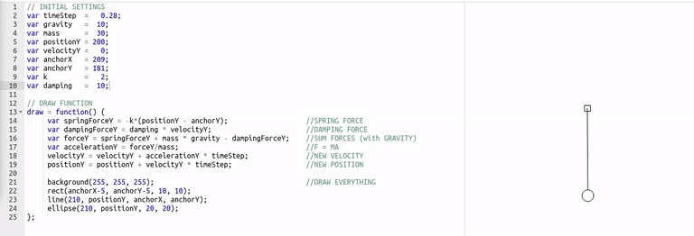

This all started with a desire to learn about how to model the springs and dampers in the context of a vehicle suspension. In my Linear Signals and Systems class during undergrad, we had done some things with second order modeling and Laplace transforms (similar to what I’ve found called the quarter-car model), but I was not sure how this would be implemented in a discrete-time context like programming a simulation of it. I was also inspired by a game called Bridge Builder that I was introduced to at a very young age by my dad who was a bridge inspector for Conrail.

Doing some research I found that Pixar has a series of courses hosted on Kahn Academy called Pixar in a Box – I went through the one on simulation, hosted by Haley Iben, and I was surprised to find just how simple it really was. The course is designed to be used for 5th grade and up but I didn’t find it at all tedious going into it with more experience.
The logic draws from the physics concept of a free body diagram – you can figure out the net forces on an object by summing all forces acting upon it. Once you know the net force on the object, you can use Newton’s second law to find acceleration (f=ma becomes a=f/m). I’ve included here a screenshot of one of the interactive damped spring examples on the Kahn Academy course.
MY 2D EXAMPLES USING SDL
In order to experiment with this more, I put together a simple C++ program using the SDL 2d renderer. My solution looked at the softbody object as a graph composed of nodes and edges – for any given node, the force upon it will come from the sum of gravity and the list of edges that it is a part of. These forces are spring constant and damping rate, and are set by parameters for each edge. This system generalizes to arbitrary graphs of interconnected nodes – that being said, it can become very unstable with distances between nodes being too small or spring constants and damping rates being set to values outside of a pretty limited range.
Each edge keeps a ‘base length’ or the distance between the two points upon initialization. This is used along with Hooke’s law and the spring constant to determine whether the force imparted by that edge will be a push or a pull along the vector between the positions of the two points during the previous update. Similarly, the damping force is based upon the damping rate times the velocity of the node during the previous update. Keeping and using the data from the previous update removes any sequential dependence when evaluating the graph nodes, allowing this to be easily parallelizable.
In the following, links in compression are red, those in tension are blue – this is done by comparing each edge’s current length to the base length. The yellow line goes between the mouse position and the nearest node – when you click, it applies force to the graph.
Cloth Sim

Bridge Truss

Vehicle Chassis

PSEUDOCODE OF MY 2D SOLUTION
CODE LISTING
FUTURE DIRECTIONS
All the computation for this project was already done with vec3’s – everything’s just in the z=0 plane. This was a put together as a relatively quick prototype, and there’s certainly room for improvement. In the writeup on the 3D version, I detail some of the directions I explored – I want to explore this parallelizability further once I figure out std::thread and see if it’s as significant a speedup as I suspect it would be.